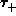
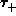
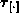
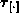

Data Structures and Algorithms
with Object-Oriented Design Patterns in Java
Data Structures and Algorithms
with Object-Oriented Design Patterns in Java
The detailed model of the computer given in the previous section
is based on a number of different timing parameters-- ,  , ,
, ,  ,
,  ,
,  ,
,
 ,
,  ,
,  ,
,  , and .
While it is true that a model with a large number of parameters
is quite flexible and therefore likely to be a good predictor of performance,
keeping track of the all of the parameters during the analysis
is rather burdensome.
, and .
While it is true that a model with a large number of parameters
is quite flexible and therefore likely to be a good predictor of performance,
keeping track of the all of the parameters during the analysis
is rather burdensome.
In this section, we present a simplified model which makes the performance analysis easier to do. The cost of using the simplified model is that it is likely to be a less accurate predictor of performance than the detailed model.
Consider the various timing parameters in the detailed model. In a real machine, each of these parameters is a multiple of the basic clock period of the machine. The clock frequency of a modern computer is typically between 100 and 500 MHz. Therefore, the clock period is typically between 2 and 10 ns. Let the clock period of the machine be T. Then each of the timing parameters can be expressed as an integer multiple of the clock period. For example, , where , .
The simplified model eliminates all of the arbitrary timing parameters in the detailed model. This is done by making the following two simplifying assumptions:
 Copyright © 1998 by Bruno R. Preiss, P.Eng. All rights reserved.
Copyright © 1998 by Bruno R. Preiss, P.Eng. All rights reserved.